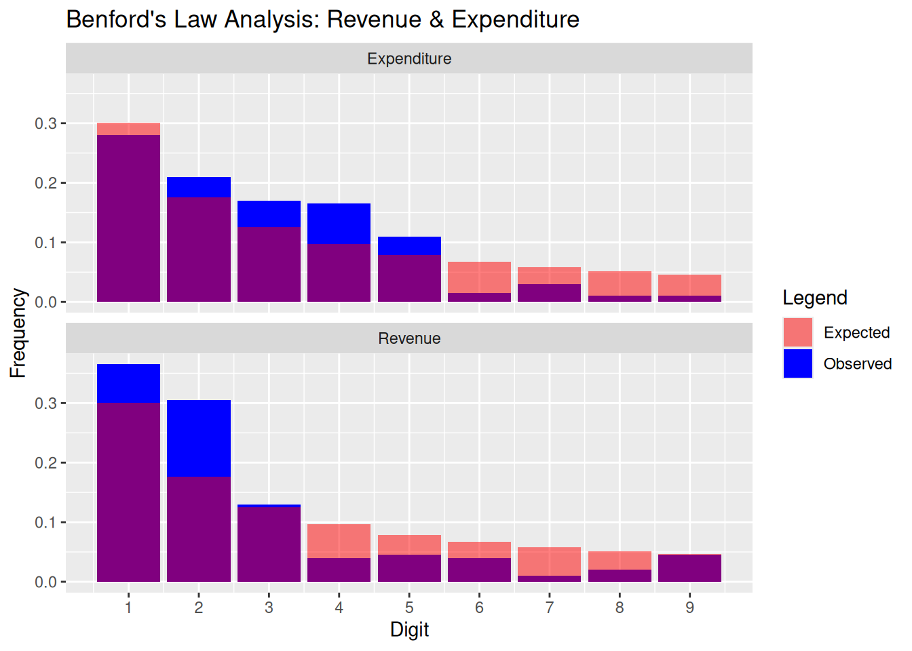

# Load the Dataset
#company_financials <- read.csv("/Users/llucian/Desktop/MCF/R\ -\ Probability\ -\ Martin\ #Summer/2/company_financials.csv")
company_financials <- read.csv("~/Code/R/Probability_Introduction/data/company_financials.csv")
# Function to extract first digits and calculate frequencies
process_benford <- function(column) {
first_digit <- as.numeric(substr(as.character(column), 1, 1))
first_digit <- first_digit[first_digit %in% 1:9] # Filter valid digits
counts <- table(factor(first_digit, levels = 1:9)) # Force all digits 1-9
observed_freq <- counts / sum(counts)
return(list(counts = counts, observed_freq = observed_freq))
}
# Process Revenue and Expenditure
rev_results <- process_benford(company_financials$Revenue)
exp_results <- process_benford(company_financials$Expenditure)
# Benford's expected frequencies (same for both)
benford_freq <- c(0.301, 0.176, 0.125, 0.097, 0.079, 0.067, 0.058, 0.051, 0.046)
# Combine data for plotting
df_rev <- data.frame(
Digit = 1:9,
Observed = as.numeric(rev_results$observed_freq),
Type = "Revenue"
)
df_exp <- data.frame(
Digit = 1:9,
Observed = as.numeric(exp_results$observed_freq),
Type = "Expenditure"
)
df_combined <- rbind(df_rev, df_exp)
df_combined$Expected <- rep(benford_freq, 2) # Add expected frequencies
# Plot with facets
library(ggplot2)
ggplot(df_combined, aes(x = Digit)) +
geom_bar(aes(y = Observed, fill = "Observed"), stat = "identity", position = "dodge") +
geom_bar(aes(y = Expected, fill = "Expected"), stat = "identity", position = "dodge", alpha = 0.5) +
facet_wrap(~Type, ncol = 1) + # Separate panels for Revenue/Expenditure
labs(title = "Benford's Law Analysis: Revenue & Expenditure", y = "Frequency") +
scale_fill_manual(name = "Legend", values = c("Observed" = "blue", "Expected" = "red")) +
scale_x_continuous(breaks = 1:9)
# Chi-Square Tests for both columns
chisq_rev <- chisq.test(x = rev_results$counts, p = benford_freq)
chisq_exp <- chisq.test(x = exp_results$counts, p = benford_freq)
# Print results
cat("----- Revenue Chi-Square Test -----\n")----- Revenue Chi-Square Test -----print(chisq_rev)
Chi-squared test for given probabilities
data: rev_results$counts
X-squared = 45.191, df = 8, p-value = 3.385e-07cat("\n----- Expenditure Chi-Square Test -----\n")
----- Expenditure Chi-Square Test -----print(chisq_exp)
Chi-squared test for given probabilities
data: exp_results$counts
X-squared = 39.816, df = 8, p-value = 3.467e-06
Comments MS:
Many thanks for this excellent submission. I add a few comments which you might find useful here:
This is an excellent piece of work that lays a solid foundation for further exploration. With the additional steps outlined above, your analysis could provide even deeper insights into the applicability of Benford’s Law to this dataset. Well done!